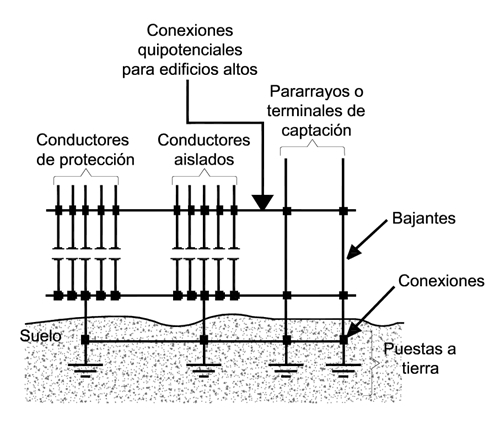

Siempre es más fácil conocer las normas ENEL-CODENSA
Rolex Rolex gold watch, compared with ordinary materials, gold watches are often expensive, but the replica rolex gold watch has the role of swiss replica watches hedging, so that it often becomes the first choice for collectors. The gold watch has value in the world, largely because the omega replica watch brand launched a commemorative limited edition watch or a replica hublot complex movement process or artistic attainments deep watches, mostly preferred gold precious metals such material. These watches tend to have a strong hedging function, therefore, Rolex Rolex gold watch reputation.

AE280 Sistema de puesta a tierra
Datos adicionales
Número de la norma
AE280
Fecha de vigencia
02/12/2009
Herramientas adicionales
Relacionados
Norma técnica
- Contenido Ocultar
- 7.2.7. PUESTA A TIERRA
- Aspectos generales
- 7.2.7.1. Conductor de puesta a tierra de equipos
- 7.2.7.2. Conductor del electrodo de puesta a tierra
- 7.2.7.3. Electrodo de puesta a tierra
7.2.7. PUESTA A TIERRA
Los sistemas eléctricos serán puestos a tierra para la protección y la seguridad de las personas, y facilitar la operación de los equipos que limitan las sobretensiones debidas a descargas atmosféricas en la línea. Además mantendrán la tensión con respecto a tierra dentro de un rango normal de funcionamiento.Los sistemas eléctricos se aterrizarán de manera sólida para facilitar la acción de los dispositivos de protección en caso de fallas a tierra.
Toda instalación eléctrica debe disponer de un Sistema de Puesta a Tierra (SPT), de tal forma que en cualquier punto accesible a personas, éstas no queden sometidas a tensiones de paso o contacto superiores a los umbrales soportables por el ser humano.
“En una caja o armario de medidores, se llamará “sistema de electrodo de conexión a tierra”, al conjunto de los siguientes elementos: El conductor desnudo o con aislamiento de color verde o verde amarillo, (o en su defecto con marcación en las partes visibles con pintura, con cinta o con rótulos adhesivos de color verde para la conexión a tierra), el barraje a tierra y el electrodo de puesta a tierra, los cuales se muestran en la Norma AE281.”
El conductor de tierra normalmente no deberá transportar corriente. Es conocido también con el nombre de polo a tierra. Sirve para aterrizar las partes metálicas de equipos eléctricos, tales como motores, estufas, electrodomésticos, lavadoras, lavaplatos, ducterías metálicas y pantallas metálicas de cables.
Aspectos generales
- Los elementos metálicos que no sean parte de las instalaciones eléctricas no se puede usar como conductores de puesta a tierra, sin embargo, deberán conectarse al sistema de puesta a tierra.
- Los elementos metálicos que sean refuerzo estructural de una edificación deben conectarse a tierra de manera permanente.
- Las conexiones en puestas a tierra que vayan por debajo del suelo deben ser realizadas con soldadura exotérmica o con un conector debidamente certificado.
- Se debe construir una caja de inspección de 30*30 cm o de 30 cm de diámetro para que las conexiones a tierra sean accesibles e inspeccionables.
- No es permitido utilizar aluminio enterrado en los componentes de puestas a tierra.
- Si en una edificación o inmueble existen varias puestas a tierra, estas deben ir interconectadas eléctricamente, según como se ilustra en la figura.

7.2.7.1. Conductor de puesta a tierra de equipos
Las instalaciones eléctricas que usan ducto metálico, utilizarán este mismo como conductor de puesta a tierra (grounding), y lo deberán sujetar con firmeza a la parte metálica de todas las cajas de paso y tableros. La Norma NTC 2050, Sección 250-72, permite varios métodos para realizar la sujeción firme.Cuando la ducteria sea en PVC, se deberá hacer continuidad entre todas las cajas metálicas, usando un conductor de cobre desnudo. El calibre de este conductor dependerá de la capacidad del interruptor automático del respectivo circuito ramal, siendo el calibre mínimo el N° 14 AWG.
Los conductores del sistema de puesta a tierra deben ser continuos, sin interruptores o medios de desconexión y si presentan empalmes, estos deben ser certificados. Además debe acompañar los conductores activos durante todo su recorrido y por la misma canalización.
La corriente máxima admisible en los conductores del SPT, bajo operación normal no debe sobrepasar los siguientes valores según ANSI/IEEE 80:
- 0,1 amperios si el circuito ramal es solo para carga electrónica y atendida solo por personal calificado.
- 25 mA si el circuito ramal es derivado o de uso general y no tiene cargas electrónicas.
En las cajas y armarios de medidores se unirán los conductores de neutro y tierra y se aterrizarán en un solo punto.
Para la puesta a tierra de los equipos y ducterIas, se permitirá el uso de conductores desnudos o aislados.
Cuando este conductor sea aislado, el aislamiento deberá ser de color verde continuo, verde con franjas amarillas o identificado con marcas verdes en los puntos de inspección y extremos.
El conductor utilizado para la conexión a tierra de equipos y ducterías, se selecciona de la tabla 250-95 de la Norma NTC 2050.
| Calibre mínimo del conductor de continuidad de tierra para ducterías y equipos (Norma NTC 2050, tabla 250-95) | ||
| Corriente nominal o ajuste máximo del dispositivo automático de protección contra sobrecorriente en el circuito antes del equipo, tubos conduit, etc. (Amperios) | Sección transversal Conductor de cobre N° | |
| mm2 | AWG | |
| 15 | 2.08 | 14 |
| 20 | 3.3 | 12 |
| 30 | 5.25 | 10 |
| 40 | 5.25 | 10 |
| 60 | 5.25 | 10 |
| 100 | 8.36 | 8 |
| 200 | 13.29 | 6 |
| 300 | 21.19 | 4 |
| 400 | 26.66 | 3 |
| 500 | 33.62 | 2 |
| 600 | 42.20 | 1 |
| 800 | 53.50 | 1/0 |
| 1000 | 67.44 | 2/0 |
| 1200 | 85.02 | 3/0 |
| 1600 | 107.21 | 4/0 |
7.2.7.2. Conductor del electrodo de puesta a tierra
Es usado para conectar el punto neutro de la acometida a uno o varios electrodos de tierra.Garantizada la continuidad de puesta a tierra del sistema eléctrico se deberá hacer la conexión al electrodo de tierra. El calibre del conductor usado para la puesta a tierra de la caja o armario de medidores, se determinará según los calibres de los conductores de acometida de acuerdo con la tabla 250-94 de la Norma NTC 2050.
El conductor de puesta a tierra se deberá conectar entre la barra de neutro de la caja o armario de medidores y el electrodo de tierra, que normalmente consiste de una varilla de cobre o cobrizada de 5/8” x 2.4 m. El valor de la resistencia de puesta a tierra, no deberá ser mayor de 25 ohmios (Sección 250-84 Norma NTC 2050).
Para la puesta a tierra del conductor del neutro, ver tabla 250-94 de la NTC 2050.
| Conductor del electrodo de puesta a tierra (Norma NTC 2050, tabla 250-94) | ||
| Sección transversal del mayor conductor de acometida o su equivalente para conductores en paralelo | Sección transversal (calibre) del conductor al electrodo de puesta a tierra | |
| Cobre | mm2 | Cobre |
| 2 o menor | 8.36 | 8 |
| 1 o 1/0 | 13.29 | 6 |
| 2/0 o 3/0 | 21.14 | 4 |
| 4/0 hasta 350 kcmil | 33.62 | 2 |
| 400 hasta 600 kcmil | 53.50 | 1/0 |
| 650 hasta 1100 kcmil | 67.44 | 2/0 |
| 1200 kcmil | 85.02 | 3/0 |
7.2.7.3. Electrodo de puesta a tierra
Electrodo de puesta a tierra es un cuerpo metálico conductor en contacto permanente con el terreno y capaz de dispersar corrientes eléctricas. Está constituido por uno o varios elementos unidos entre sí, mediante conductores enterrados y no aislados del terreno. Algunos tipos de electrodos son: varillas, placas, anillos, flejes, cables o mallas construidas con conductores.Los electrodos de puesta a tierra deben cumplir con los siguientes requisitos:
| Tipo de electrodo | Materiales | Dimensiones mínimas | |||
| Diámetro (mm) | Área (mm2) | Espesor (mm) | Recubrimiento (µ m) | ||
| Varilla | Cobre | 12,7 | |||
| Acero inoxidable | 10 | ||||
| Acero galvanizado en caliente | 16 | 70 | |||
| Acero con recubrimiento electrodepositado de cobre | 14 | 250 | |||
| Tubo | Cobre | 20 | 2 | ||
| Acero inoxidable | 25 | 2 | |||
| Cobre cincado | 25 | 2 | 55 | ||
| Tipo de electrodo | Materiales | Dimensiones mínimas | |||
| Fleje | Cobre | 50 | 2 | ||
| Acero inoxidable | 90 | 3 | |||
| Cobre cincado | 50 | 2 | 40 | ||
| Cable | Cobre | 1,8 para cada hilo | 25 | ||
| Cobre estañado | 1,8 para cada hilo | 25 | |||
| Placa | Cobre | 20000 | 1,5 | ||
| Acero inoxidable | 20000 | 6 | |||
Los fabricantes de electrodos deben garantizar que la resistencia a la corrosión de cada electrodo sea por lo menos de 15 años a partir de la fecha de instalación.
Si el electrodo es tipo varilla, ésta debe tener una longitud mínima de 2.4 m y debe estar identificada con los datos del fabricante y sus dimensiones dentro de los 30 cm que quedan en la parte superior.
Si el electrodo tiene alma de acero, debe ser de acero fino al carbono de una dureza Brinell comprendida entre 180 H y 220 H. El contenido de fósforo y azufre no debe exceder el 0.04%.
Si el electrodo está compuesto por dos o más metales, se debe asegurar la adherencia molecular entre estos. Para esto la capa o capas exteriores se depositarán mediante electrolisis, fusión u otro procedimiento que asegure la adherencia.
La parte superior del electrodo enterrado debe quedar a 15 cm de la superficie como mínimo.
Al momento de adelantar la obra civil para la instalación de un armario de medidores, caja para medidores o cajas para equipos de medida, se deberá dejar prevista la caja de la instalación del electrodo de puesta a tierra (Norma AE281).